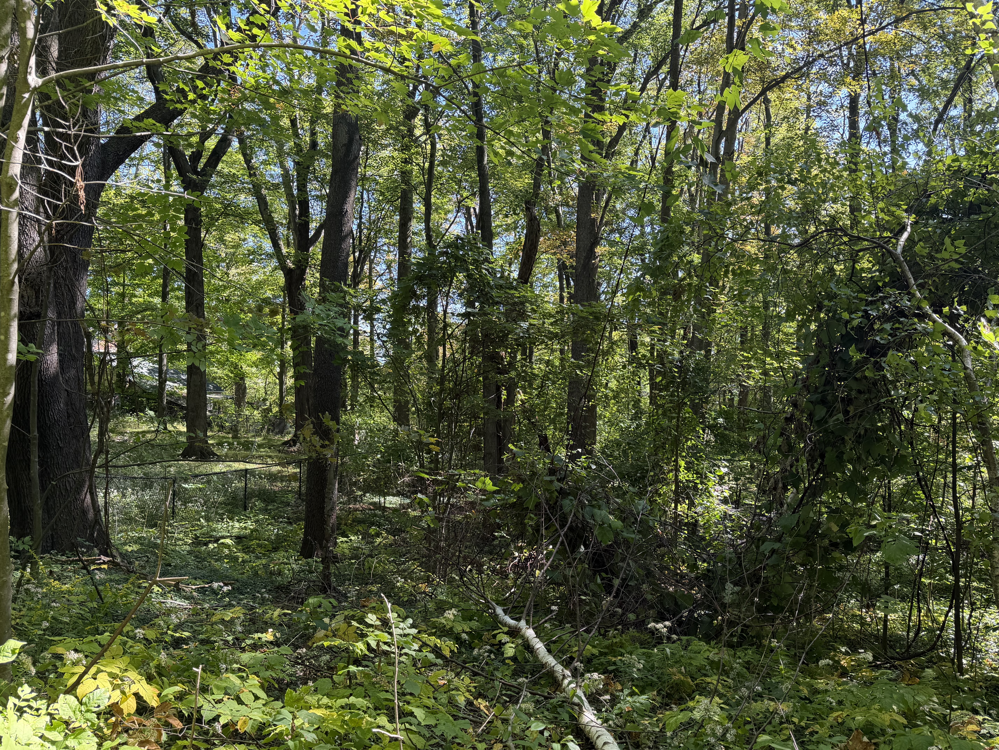
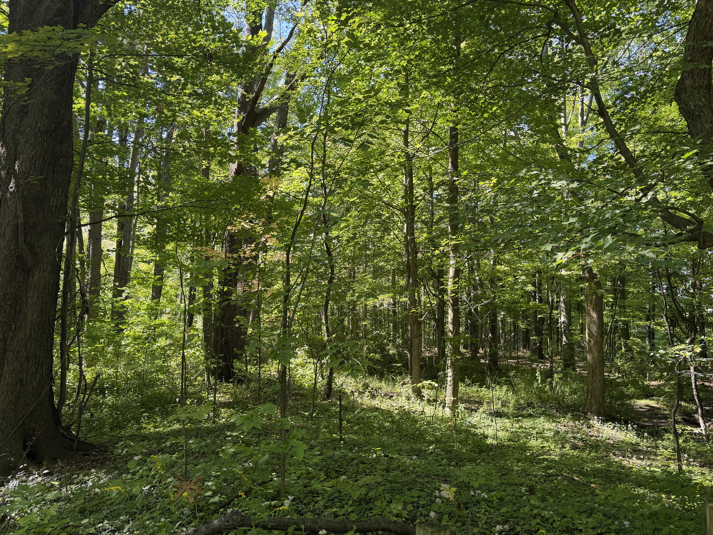

When I walk through the woods, I am reminded that death is all around us. I see it as I walk past a spider web with a fly caught in it. I hear it in the crunch of
dead leaves I walk on.

Death is something that I have always struggled to contend with. The idea of being gone from this world, and then eventually forgotten, is
especially unsettling to me.
One day, I was hiking on Penn State Behrend's campus, which has stretches and streches of forested area on its property. I've always loved hiking, so exploring woods
on campus was something I'd do from time to time.

One of Behrend's hiking trails.
In one of these instances, I found a trail I'd never seen before, and just like many other times, I decided to check it out.
I stopped when I stood before a strange rock structure. It had a small fence around it made of cord and wood.
Staked next to it was a US flag, with an emblem attatched to it that said "US Vertern".
It looked like the same kind of flags they put next to grave stones that belong to veterns, though usually the emblem specifies which war they fought in.
I didn't know what to make of it, I guessed it was perhaps a student-created vetern memorial. I thought it was weird to be in the middle of the woods like this, though.
Those stones held a significance I didn't understand yet.
I continued on the trail, until I stumbled upon a sign that said "Gospel Hill Burial Ground" and my interest was piqued.